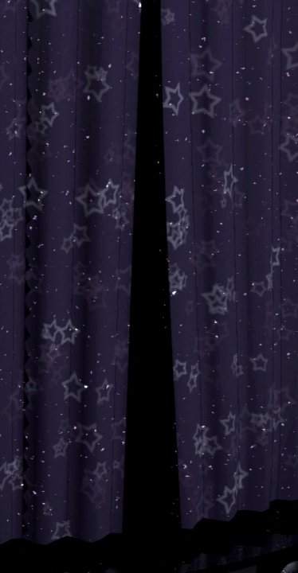
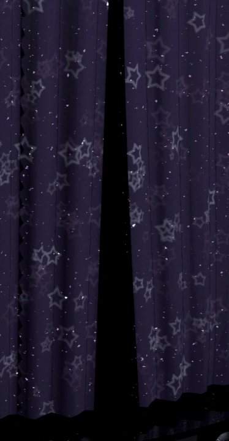

Aviso!
Este site contem sustos e audios altos!
cuidado
ao prosseguir se voce tem algum problema de saúde sério!
Configurações > Privacidade e segurança > Config do site > mais config de conteúdo > Som ,
e adicione o site na lista permitir a reprodução de sons.
clique no personagem para revelar seus segredos

William Afton
William Afton
O Vilão por trás de toda a trama, William Afton é o fundador da Fazbear Pizza junto com seu amigo Henry Emmily, depois de ter feito um atrocidade com sua filha, William comete uma onda de assassinatos que dá vida aos seus animatrônicos com a alma das vítimas, escondido por trás de sua fantasia do Spring Bonnie, um serial Killer, até que um dia seu traje foi danificado pela água e o matou ali dentro, ou talvez? acho que não, sempre que pensam que ele morreu, William sempre volta!
Freddy
Chica
Bonnie
 

Foxy
Freddy
Uma das primeiras Vítimas de William, uma das crianças, com sua alma dentro de um animatronico, Fred é o líder e um dos mais perigosos,nao gosta de se expõr as cameras e gosta de estar sempre oculto e um passo a frente.
Chica
O toque feminino do grupo, a alma da criança dentro de chica tambem é outra Vítima, com seu bolinho carísmatico mas tambem muito perigoso, chica gosta de chamar atenção e anunciar sua chegada.
Bonnie
Com sua Guitarra maneira, Bonnie é o que dá vida nas músicas dos shows, mas, o primeiro quem decide a dar o primeiro passo para atacar, é ele. Bonnie não gosta de ser vigiado e não deixa rastros onde ele passar.
Foxy
O pirata Foxy, apesar de não estar presente nas apresentações dos animatronics, Foxy esta sempre em seu palco coberto com sua cortina, é um lembrete, que nem sempre oque não esta visível não deixa de ser uma ameaça, Foxy não gosta de enrolar, a primeira oportunidade que ele tiver , irá correndo pra cima de sua vítima.

Golden Freddy
A primeira Vítima da família de William, seu filho, Evan Afton, foi morto no dia de seu Aniversário quando seu Irmão que sempre fazia bullying com ele decidiu colocar sua cabeça dentro da boca do Fredbear e entao fredbear o matou com sua mordida e sua alma foi parar dentro de Fred, se tornando, Golden Freedy.